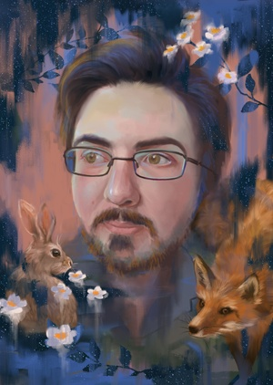
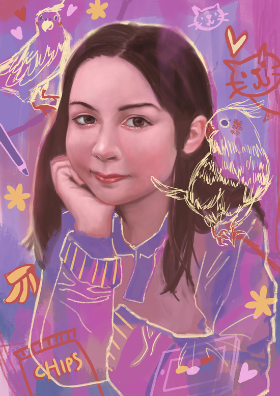
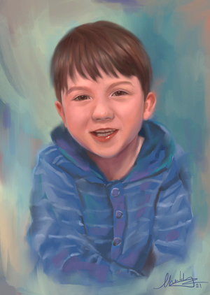
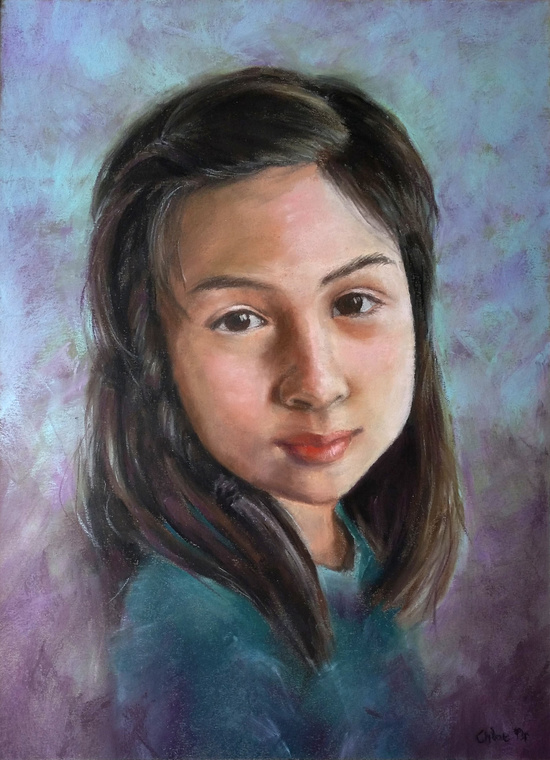
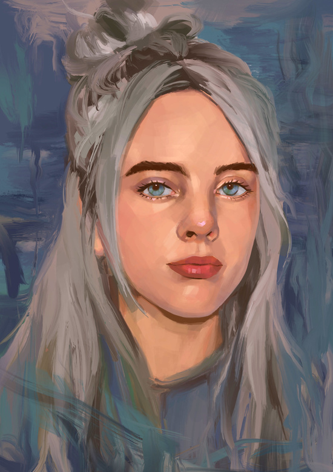
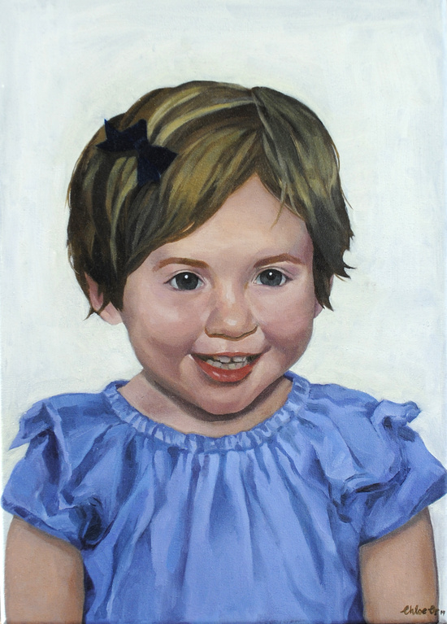
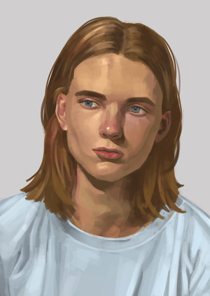
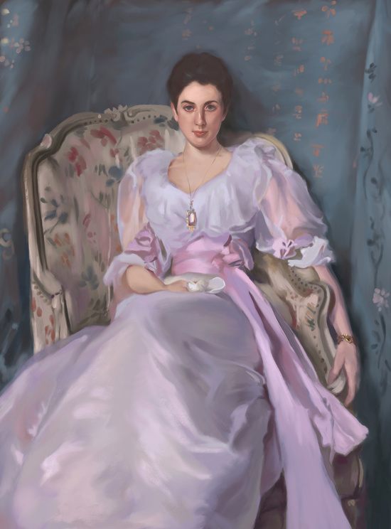

Copyright © All rights
reserved.

'Tim, of stars', painted on the Procreate app. This is a portrait of my partner Tim. He is a gentle and kind person – a vegan who loves animals, nature and gazing at the stars. He is often fascinated by the world around him. I wanted to portray his personality through the use of the colours, as well as the animals fox and hare that often appears in fables to show his interest in stories. We are interconnected with the world and we are made of stars.

'Jocelyn and her favourite things', painted on the Procreate app. A portrait of my friend, Jocelyn. She is an artist and a keen (award-winning!) table tennis player with two pet cockatiels, and has much aspiration and energy for life. I wanted to create a contrast between a realistic rendering of her face with the sketchy doodles around her, which represents her fun and spontaneous extroverted personality.

'Edmund', painted on the Procreate app. A portrait gift for family.

'Jocelyn', pastel on paper. A portrait of my friend Jocelyn. 'Merit' award winner at the Royal Easter Show Art Awards 2016, Auckland.

'Blue', painted on the Procreate app. A portrait study of the singer Billie Eilish.


'Sophie', oil on canvas. Private commission.

'Still', painted on the Procreate app. A portrait study of the model Charlie Kennedy.

'Lady Agnew of Lochnaw', painted on the Procreate app. A John Singer Sargent portrait study to explore his techniques.